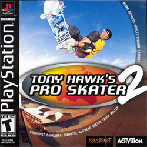
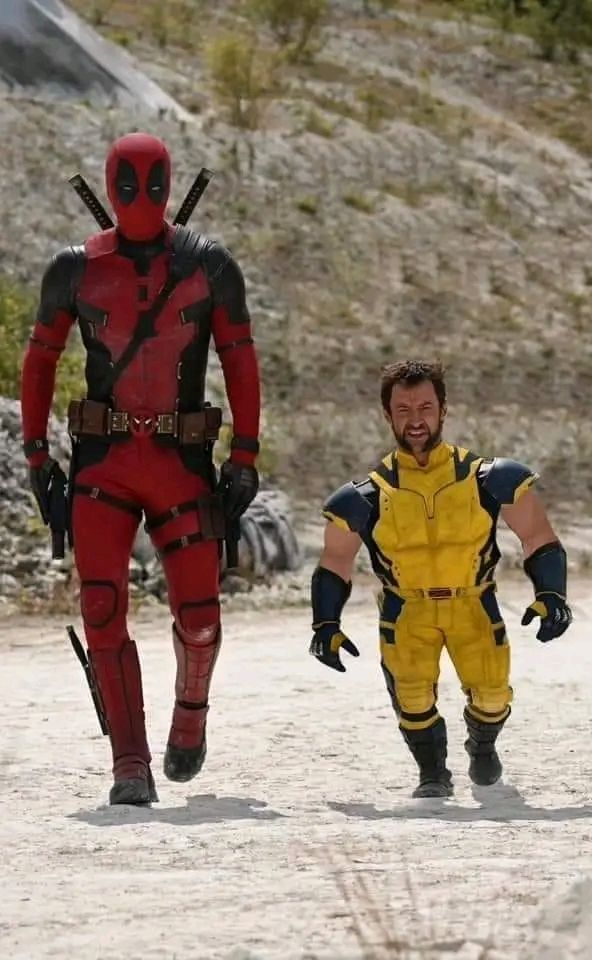

Tony Hawk’s Pro Skater 2

Тема и описание: Tony Hawk’s Pro Skater 2 - видеоигра в жанре спортивного симулятора скейтбординга, разработанная компанией Neversoft и выпущенная Activision 19 сентября 2000 года для Sony PlayStation, вторая по счёту в серии Tony Hawk. В дальнейшем игра была портирована на Nintendo 64, Dreamcast, Game Boy Advance, Mac OS и Windows. Также игра была адаптирована под Game Boy Color.В игре представлены тринадцать реально существующих профессиональных скейтбордистов:Тони Хоук, Боб Бернквист, Стив Кабальеро, Карим Кэмпбелл, Руне Глифберг, Эрик Костон, Баки Ласек, Родни Маллен, Чад Маска, Эндрю Рейнольдс, Джефф Роули, Элисса Стимер, Джейми Томас. Секретные персонажи: Офицер Дик, Рядовой Каррера, Человек-паук, Мак Сквиб (Тони Хоук в стиле 1980-х годов), Минди (только в версии для Game Boy Advance), Трикси (только версии для Xbox/Dreamcast).
Рецензия: Мы можем выделить Tony Hawk’s Pro Skater 2 за хорошую физику, приятный саундтрек, локации и сам геймплей. Мы ставим Тони Хоуку 9/10.
I AM. SOUNDTRACK (Shadow the hedgehog)

Тема и описание:Этот саунд называют самой тяжелой темой в музыке о Сонике. Воспроизведен трек был в Shadow the hedgehog, игре про ежа Shadow, но где если не там. В игре где ты с пушкой на перевес уничтожаешь темных гадов под рок.
Рецензия: Единственный минус в данном музле что текст как и сама мелодия может приресться, да этоо не мешает ей звучать хорошо, но даже спустя года саунд может поднодоедать. Мы ставим данному саундтреку 7/10.
Homestuck и Andrew Hussie
Тема и описание: Веб-комикс "Homestuck" - стал для нас открытием в этом году (на момент 2026), открыв порывы для творчерства, изуения кода и тд.Также стала интересна личность создателя Andrew Hussie: О котором вы можете узнать в разделе "nice bro". Homestuck - Смесь безумия, хорооших артов, гифок, обсурдных диологов, шуток и моментами интерактивом, вы не пожалеете ни на грамм что начали читать его.
Рецензия: Из прям БОЛЬШИХ минусов можно отметить то что в комиксе 8000 СТРАНИЦ! Но если вы увлечены историей, то для вас это не послужит большой проблемой. Мы ставим Homestuck 10/10.
LinuxMint
Тема и описание: Линукс в наше время - это символ своободы в операционных системах. Мы же хотим выделить дистрибутив "LinuxMint", один из легких и по нашему мнению шикарных дистрибутивов, если вы хотите уловить философию линукса и свободного кода, то ставте на ваши устройства LinuxMint и не парьтесь.
Рецензия: Как бы он не был хорош, все таки это линукс которым пользуется 4% всей планеты, придется привыкать и не факт что быстро, но еслли привыкнуть, то в целом это очень удобная система которой мы ставим 8/10.
Deadpool and Wolverine

Тема и описание: Фильм уже вышел несколько лет назад, но все ещё восхитительно смотрится, мы хотим выделить работу со звуком, не то что бы музыка в прошлых частях была плохой, но в третьей это великолепно. Чего оставляет только общая картина фильма и музыка NSYNC.
Рецензия:Фильм сто процентов нужно посмотреть даже если вы его уже смотрели, мы же быз лишних слов ставим 10/10.
IPhone Duo
Тема и описание: Раскладушка от APPLE, телефон о котором наверное никто не просил(.
Рецензия:Ладно, все-таки было интересно посмотреть как apple сделают свою раскладушку. Главные проблемы iPhone Duo связаны с хрупкостью внутреннего гибкого экрана, уязвимостью шарнира к грязи и сырым программным обеспечением. Бонально стоит посмотреть на те же приложения яндекса, хотя для кого-то не самый лучший пример. Мы пока поставим IPhone Duo 6/10.
System 1

Рецензия и..: Не уходя далко от компании apple, мы хотели бы вам напомнить про Machintosh System 1. А именно больше поразмыслеть как бы эта система и её цвета сочитались с нынешними приложениями и браузерами. Может используя линукс, восоздав такую оболочку получиться добиться такого результата. На то время это была хорошая система, ставим ей 9/10.
О проекте
Это так называемая "Комната рецензий". Тут мы высказываем своё мнение о том, о сем. О чём мы хотим крч.